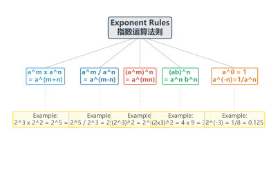
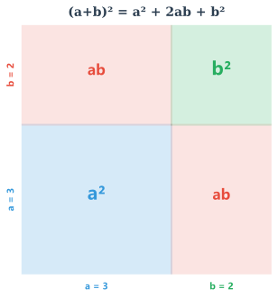
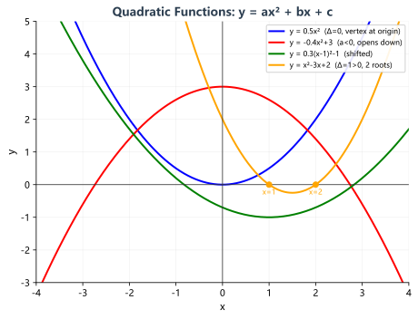
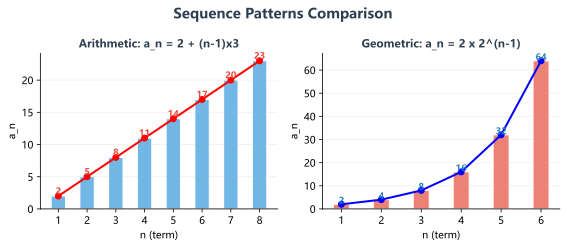
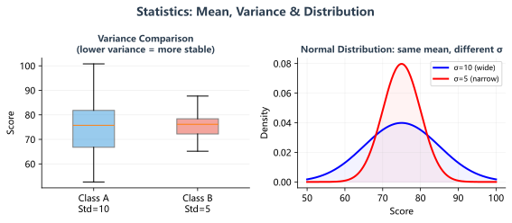

幂运算是代数运算的根基，整式的乘除、方程变换都离不开幂的运算。记住：幂运算的核心是"底数不变、指数操作"。

乘法公式是代数运算的工具，而因式分解是乘法公式的逆运算。掌握它们之间的互逆关系，能大幅提升计算速度和准确率。

方程是代数的核心工具——用方程来刻画数量关系，是解决实际问题的核心方法。一元二次方程的解法是重中之重。
不等式与方程最大的区别在于：方程等号两边操作一致，而不等式乘除负数时不等号方向会改变。这是最关键也是最易错的知识点。
函数是中考的压轴题常客。一次函数、二次函数、反比例函数是初中必须掌握的三大函数，理解它们的图像特征是解题的关键。

| 函数 | 图像形状 | 增减性 | 对称性 |
|---|---|---|---|
| 一次函数 | 直线 | k>0单调增；k<0单调减 | / |
| 反比例函数 | 双曲线 | k>0在各象限内递减；k<0递増 | 关于原点中心对称 |
| 二次函数 | 抛物线 | 对称轴左侧与右侧增减相反 | x=-b/(2a) |
数列考查的是规律发现能力。等差和等比数列是两种最基本的数列模型，它们的通项公式和求和公式必须熟练掌握。

统计与概率是应用型知识，中考中常以实际情境为载体考查。核心是理解数据特征量的意义，以及概率的计算方法。

代数综合题往往把方程、函数、不等式融合在一起，考查学生的综合运用能力。掌握以下解题策略，能帮助你在考场上快速找到突破口。
| 题型 | 特点 | 解题策略 | 示例 |
|---|---|---|---|
| 方程-函数综合 | 给出函数图像上的点满足方程关系 | 将点的坐标代入函数解析式构造方程 | 抛物线上某点在直线y=2x+1上 |
| 不等式-函数综合 | 求x取何值时函数值>0或<0 | 转化为解二次不等式，利用图像判断 | 求y=x²-4x+3>0的解集 |
| 实际应用题 | 工程、行程、利润等问题 | 设未知数→列方程/不等式→求解→检验 | 某商品降价求最大利润 |
| 规律探究题 | 给出数列或图形找规律 | 列出前几项→找通项公式→代入求解 | 摆火柴棍的规律探索 |